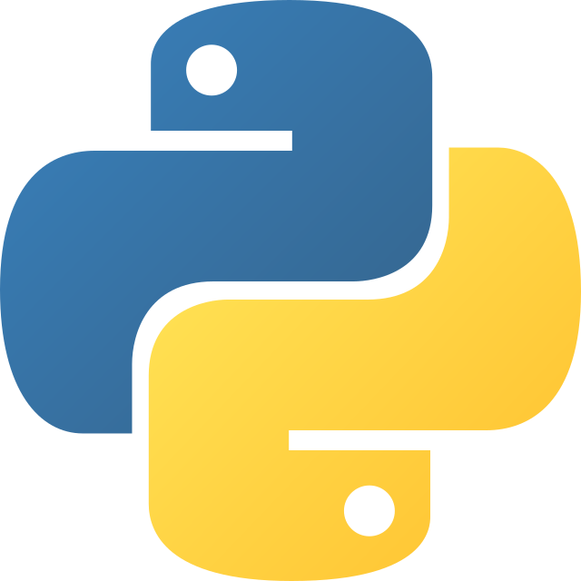
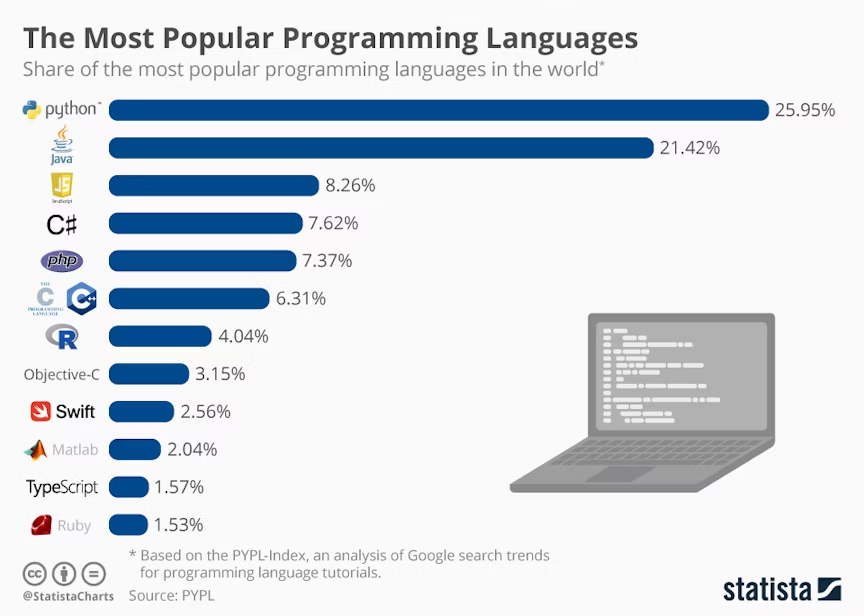

Introducció a Python
Introducció a Python
Què és Python?
Python és un llenguatge de programació de molt alt nivell, dissenyat per ser fàcil de llegir i escriure.
Va ser creat per Guido van Rossum i llançat per primera vegada l’any 1991. Python es destaca per la seva simplicitat i llegibilitat, utilitzant una sintaxi que permet als desenvolupadors expressar conceptes en menys línies de codi que altres llenguatges com C++ o Java.

És un llenguatge interpretat, el que significa que el codi s'executa línia per línia, el que facilita la depuració i el desenvolupament ràpid.
Breu història de Python
- 1991 – Guido van Rossum llança Python com a projecte per resoldre problemes en el desenvolupament de programari en el laboratori de la Centrum Wiskunde & Informatica (CWI) als Països Baixos.
- 1994 – Apareix la primera versió pública de Python.
- 2000 – L’última versió major de Python 2 és llançada. Python 2 continua sent usat fins als seus últims dies (2020).
- 2008 – Es llança Python 3, una versió incompatible amb Python 2, que va incloure millores significatives en la sintaxi i el rendiment.
Atenció
- Quines implicacions creus que va tindre açò?
- Actualitat – Python és un dels llenguatges més populars per a la ciència de dades, la intel·ligència artificial, el desenvolupament web i moltes altres aplicacions.

Característiques de Python
- Llenguatge de molt alt nivell: Python està dissenyat per ser fàcil de llegir i escriure, semblant al llenguatge natural.
- Sintaxi simple i clara: Utilitza indentació per definir blocs de codi, cosa que elimina la necessitat de claus o parèntesis.
- Gran biblioteca estàndard: Python ve amb una àmplia col·lecció de biblioteques per a tot, des de la manipulació de fitxers fins a la creació d’aplicacions web i la gestió de bases de dades.
- Interpretat: Python és un llenguatge interpretat, el que vol dir que el codi es pot executar immediatament, sense necessitat de compilar-lo.
- Portabilitat: Python funciona en pràcticament tots els sistemes operatius modernes, des de Windows fins a Linux i macOS.
- Multiplataforma: Permet desenvolupar aplicacions per a diversos entorns, des de scripts de consola fins a aplicacions web.
Què pots fer amb Python?
- Desenvolupament web: Frameworks com Django i Flask permeten crear aplicacions web ràpides i escalables.
- Ciència de dades: Biblioteques com NumPy, Pandas, Matplotlib i Scikit-learn permeten treballar amb grans volums de dades, realitzar anàlisis estadístiques i construir models d'aprenentatge automàtic.
- Automatització: Python és ideal per escriure scripts d’automatització que realitzen tasques repetitives com gestionar fitxers o enviar correus electrònics.
- Intel·ligència artificial i aprenentatge automàtic: Amb biblioteques com TensorFlow, Keras i PyTorch, Python és un llenguatge molt usat en el desenvolupament de models d’IA.
- Aplicacions de línia de comandes: Python és perfecte per escriure eines i aplicacions d’automatització per línia de comandes.
- Desenvolupament de videojocs: Python també es pot utilitzar per crear videojocs mitjançant biblioteques com Pygame.
Avantatges de Python
- Facilitat d’aprenentatge: Python és un dels llenguatges més fàcils de començar a aprendre, gràcies a la seva sintaxi clara i senzilla.
- Gran comunitat: Existeix una enorme comunitat de desenvolupadors que contribueixen a biblioteques, eines i recursos d’aprenentatge.
- Versatilitat: Python es pot utilitzar per gairebé qualsevol tipus de desenvolupament, des de petites automatitzacions fins a grans sistemes de producció.
- Codi net i llegible: La sintaxi de Python promou el desenvolupament de codi net i estructurat, facilitant la mantenibilitat i la col·laboració.
Què fa Python diferent?
A diferència d'altres llenguatges de programació, Python és un llenguatge molt dissenyat per ser llegible. Aquesta filosofia de llegibilitat fa que els programes Python siguin fàcils de seguir i entendre. A més, el fet que Python sigui un llenguatge interpretat i dinàmic el fa molt flexible per a diversos tipus d’aplicacions i desenvolupament ràpid.
Exemple de codi en Python
Un dels exemples més senzills en Python seria un codi que imprimeix "Hola, món!" a la pantalla:
Aquest codi fa servir la funció print(), que és una de les funcions integrades de Python que permet mostrar text a la pantalla.
Python en el futur
Python continua sent un dels llenguatges de programació més usats i amb més creixement, especialment en camps com la intel·ligència artificial, la ciència de dades, el desenvolupament web i l’automatització. Les seves aplicacions continuen expandint-se, i es preveu que la seva popularitat segueixi creixent.
Conclusió
Python és un llenguatge de programació molt potent i versàtil, ideal tant per a principants com per a professionals amb experiència. La seva simplicitat, llegibilitat i la gran quantitat de biblioteques disponibles el converteixen en una eina perfecta per a tot tipus de projectes, des de scripts petits fins a aplicacions complexes.
Exercicis
Reflexiona sobre aquests conceptes i respon a les preguntes:
- Quina creus que seria la diferència entre un llenguatge de programació interpretat i un compilat? Creus que existeix un llenguatge "hibrid"?
- Imagina que vols escriure un programa que saluda una persona. Quins passos creus que hauries de seguir per dissenyar aquest programa? Explica-ho de manera senzilla.
- Què creus que passaria si no tinguessis una sintaxi clara i simple en un llenguatge de programació com Python?